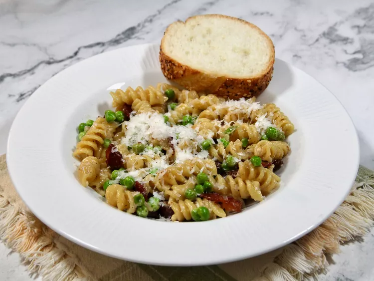

One Pan Pasta with Bacon and Peas

Description
One pan pasta with bacon and peas is an easy weeknight meal. Smoky bacon, sweet peas, and nutty Parmesan cheese are perfect partners for this dish. Use any type of dry pasta..
Ingredients
- 8 ounces bacon, diced
- 1/2 cup diced onion
- 2 cloves garlic, minced
- 2 2/3 cups chicken broth
- 2/3 cup milk
- 8 ounces rotini pasta
- 1 cup frozen peas
- 3/4 cup plain Greek yogurt
- salt and freshly ground black pepper to taste
- 1/2 cup grated Parmesan cheese, or more to taste
Steps
- Cook bacon in a large skillet over medium heat until crispy, about 3 minutes. Transfer bacon to a plate lined with a paper towel. Remove all but about 2 tablespoons bacon grease from the skillet.
- Add onion to the skillet, and cook until translucent and tender, 3 to 4 minutes. Add garlic and cook until fragrant, about 30 seconds.
- Pour in chicken broth and milk, and bring to a boil. Stir in pasta, reduce heat to medium low, cover the skillet, and cook, stirring occasionally, until pasta is al dente, 13 to 15 minutes.
- Stir in peas, and cook just until thawed. Add Greek yogurt and bacon, stir to combine, and season with salt and pepper. Sprinkle with Parmesan and serve.